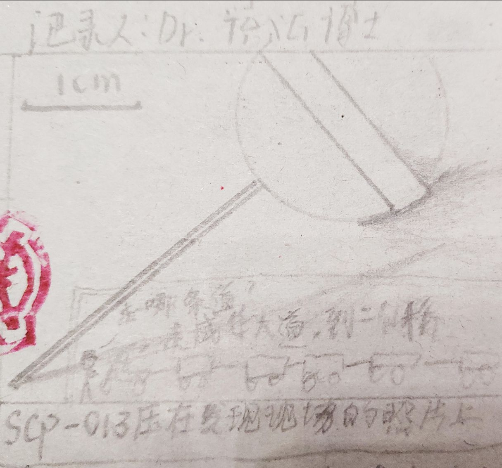

SCP-XT-013外观为一有着绿色塑料棍的粉色实体棒棒糖。成分与普通棒棒糖无区别，绿色塑料棍为聚丙烯，粉红色糖果主要成分为各类糖、着色剂、防腐剂、抗坏血酸等有机物。
SCP-XT-013未表现出任何化学性质，SCP-XT-013糖果部分只溶于有性生殖生物的唾液和消化液，不溶于任何其他溶剂或溶液中，微溶于人工配置的唾液中。不与除有性生殖生物舌头的上皮细胞受体以外的任何物质发生反应。观察到有自我修复的能力，使用空气中的CO₂与H₂O合成自身所需物质并修复自身。SCP-XT-013可用物理方法使之解体，每一个碎片会重新修复自身直到完整。修复完成后，其中一个个体会表现出关于SCP-XT-013的特异性，其他则失去一切特异性质。
SCP-XT-013的特异性表现于对有性生殖生物的神情控制与对现实世界的改变。当一个有性生殖多细胞碳基生物以某种方法与SCP-XT-013接触并且有能力和方法使SCP-XT-013糖果端与其摄食器官接触时，该生物即被SCP-XT-013特异性影响（编号SCP-XT-013-01），此时，SCP-XT-013-01半径0.5米内会突然出现一个与SCP-XT-013-01同种类异性（编号SCP-XT-013-02）与一个▇▇▇▇牌的电动车，但▇▇▇▇公司声称从未生产过此类型的电动车。电动车外观详见附录[Ⅰ]。电动车与SCP-XT-013-02皆为此世界未拥有的。SCP-XT-013-01与SCP-XT-013-02存在于▇▇▇▇电动车座位上方（距离为正常生物体相互接触和电荷相排斥的平衡距离），▇▇▇▇电动车轮子运动使系统整体能在正常大气压下的平直较大摩檫力的路上打到5m/s的速度，而SCP-XT-013-01将会与SCP-XT-013-02交流信息并停止对外界刺激做出反应。我们经实验有理由相信无论SCP-XT-013-01的种族，SCP-XT-013-01与SCP-XT-013-02的交流相同。交流大约持续30s~60s不等（由该个体传递信息效率决定）。
交流完成后，SCP-XT-013-01会完成一个部分躯体向前进方向相反的反方向移动重心的动作同时伴有上半部分表面组织弯曲折叠。就智人种黄人性成熟女性表现为眼睛上翻，面容微笑。与此同时，SCP-XT-013-01向SCP-XT-013-02传递最后的信息。SCP-XT-013表达特异性时期间，SCP-XT-013-01与SCP-XT-013-02对外界失去一切反应，无论外界将对其做出的刺激是否致命。